제과쇼케이스
베이커리 폐기 줄이는 법, 진열대에서 먼저 손볼 4가지
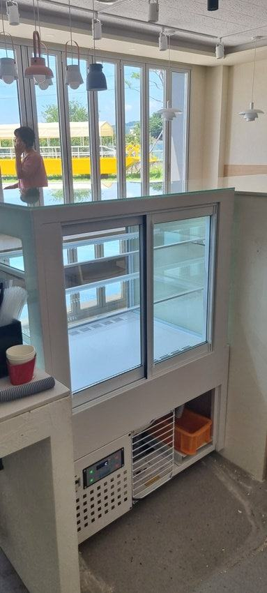
베이커리 폐기는 생산량만 줄여서는 잘 안 줄고, 상온 빵과 냉장 디저트를 나눠 진열하고 냉기가 제품 표면을 마르게 하지 않는 쇼케이스를 쓰는 것부터 손봐야 합니다. 여기에 뒤에서 채우고 앞에서 꺼내는 순서와 마감 후 보관 동선을 정해 두면 버리는 양이 눈에 띄게 달라집니다.
안녕하세요, 빵과 디저트가 돋보이는 진열장을 만드는 한성쇼케이스입니다.
베이커리 사장님들과 이야기하다 보면 "새벽부터 구웠는데 저녁마다 한 판씩 버린다"는 하소연을 자주 듣습니다.
대부분은 굽는 양을 줄이는 쪽으로 먼저 손을 대시는데, 그러면 오후에 진열대가 비어 보여 손님이 그냥 나가는 일이 생기죠.
사실 폐기의 상당 부분은 생산량보다 진열과 보관 단계에서 생깁니다. 케이크가 마르거나 크림이 눌리고, 빵이 냉기에 굳어 상품성이 떨어지면 아직 먹을 수 있어도 팔 수가 없으니까요.
오늘은 제과쇼케이스를 쓰는 매장에서 바로 점검해 볼 수 있는 폐기 줄이는 방법을 진열대 기준으로 풀어 보겠습니다.
1. 상온 빵과 냉장 디저트를 한 칸에 두지 않기
식빵, 바게트처럼 상온에서 파는 빵과 생크림 케이크, 타르트, 디저트컵은 원하는 보관 조건이 전혀 다릅니다.
한 진열대에 섞어 두면 빵은 냉기에 겉이 굳고, 케이크는 문이 자주 열리는 쪽에서 온도가 흔들려 둘 다 손해를 봅니다.
홀케이크, 조각케이크, 타르트, 음료처럼 제품군별로 구역을 나눌 수 있는 구조인지부터 확인해 보세요.
구역이 나뉘면 어느 칸이 늘 남는지도 한눈에 보여서 다음 날 생산량을 정하기가 훨씬 쉬워집니다.
- 상온 진열대와 냉장 쇼케이스를 따로 둡니다.
- 냉장 칸 안에서도 케이크와 음료 구역을 나눕니다.
- 매일 마감 때 남은 품목을 칸별로 적어 둡니다.
2. 찬바람이 직접 닿으면 표면부터 상합니다
케이크 폐기의 흔한 원인이 시트 가장자리가 마르거나 크림 표면이 갈라지는 경우입니다. 냉기가 제품에 바로 부딪히는 구조에서는 맛은 멀쩡해도 보기에 팔기 어려운 상태가 금방 옵니다.
대류냉각과 간접냉각을 함께 쓰는 방식은 냉기를 안에서 순환시켜 고르게 전달하기 때문에 디저트 표면 상태가 비교적 안정적으로 유지됩니다.
지금 쓰는 쇼케이스에서 송풍구 바로 앞 칸의 제품만 유독 빨리 마른다면 그 자리에는 포장된 음료나 마카롱처럼 덜 민감한 품목을 두는 것도 방법입니다.
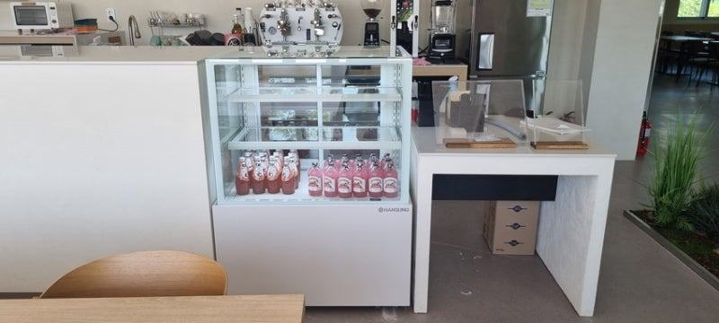
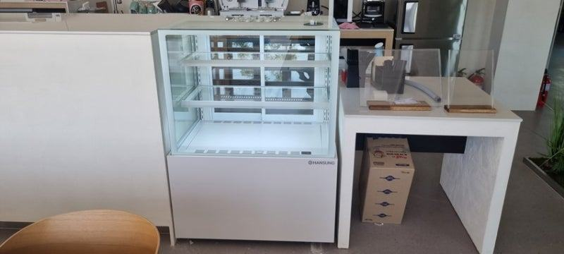
3. 뒤에서 채우고 앞에서 꺼내는 순서
아침에 만든 케이크와 오후에 만든 케이크가 섞이면 먼저 만든 것이 뒤로 밀려 그대로 남기 쉽습니다. 직원이 손님 쪽에서 꺼내고 작업자 쪽 뒷문으로 채우는 구조라면 선입선출이 자연스럽게 지켜집니다.
앞문만 있는 진열장이라면 칸마다 오전·오후 구역을 정하고, 새로 나온 제품은 항상 정해진 쪽에 두는 규칙을 만들어 보세요.
규칙이 단순해야 바쁜 시간에도 무너지지 않습니다.
- 뒷문 보충이 가능한 구조인지 확인합니다.
- 생산 시각을 가격표 뒷면에 적어 둡니다.
4. 진열량은 시간대별로, 남은 것은 마감 보관으로
진열대를 처음부터 가득 채우면 문을 여는 횟수가 늘고 조명 아래에 오래 놓이는 제품도 많아집니다. 오전에는 대표 품목 위주로, 손님이 몰리는 시간 직전에 채우는 식으로 진열량을 나누면 상하는 양 자체가 줄어듭니다.
마감 후 다음 날 판매가 가능한 품목은 진열 칸에 그대로 두지 말고 밀폐해 별도 냉장고로 옮기는 동선을 정해 두세요.
적정 보관 온도와 기간은 제품과 재료에 따라 다르니 레시피별 기준을 정해 두시는 게 안전합니다.
체크리스트
- 상온 빵과 냉장 디저트 진열 분리
- 송풍구 앞 칸에 민감한 케이크를 두지 않기
- 뒷문 보충과 선입선출 규칙
- 시간대별 진열량 나누기
- 마감 후 별도 보관 동선
- 품목별 남은 수량 기록
디자이너 설계로 맞춘 베이커리 유리진열대 사례
고급스러운 분위기와 함께 여러 제품을 한눈에 보여 주고 싶어 하셨던 베이커리 대표님 사례입니다. 진열대 디자인이 손님의 첫인상을 좌우한다고 보셔서, 경력 있는 디자이너가 설계를 맡는다는 점을 보고 제작을 결정하셨습니다.
상담 때 용량과 규모를 직접 확인하셨지만 설치 당일 치수 오차를 걱정하셔서, 효율적으로 쓸 수 있는 자리에 맞춰 설치하고 전 과정을 함께 지켜보실 수 있게 진행했습니다.
설치 후에는 신선도와 위생, 디자인을 함께 갖춘 진열대라는 평을 주셨습니다.
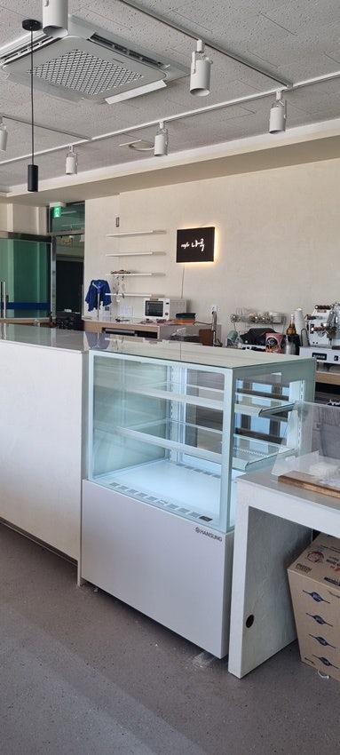
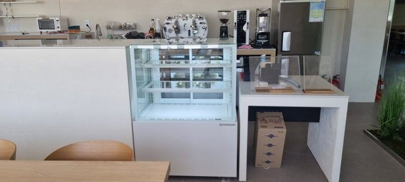
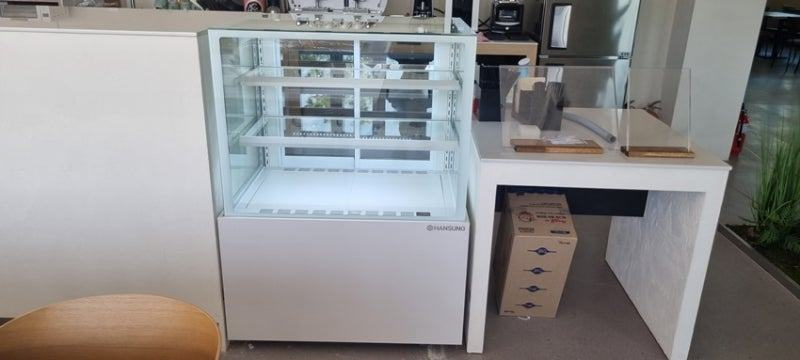
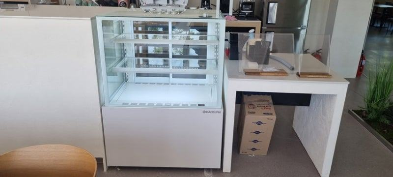
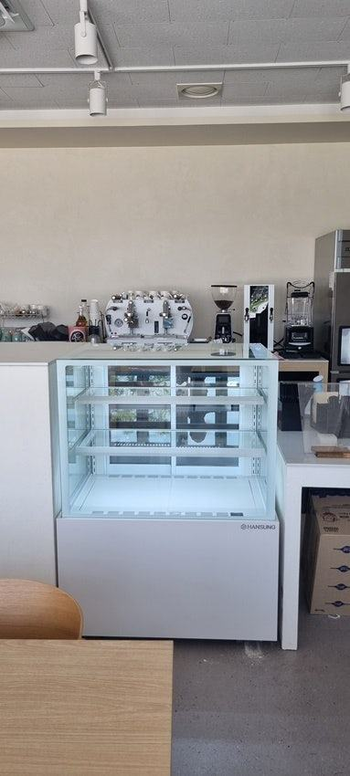
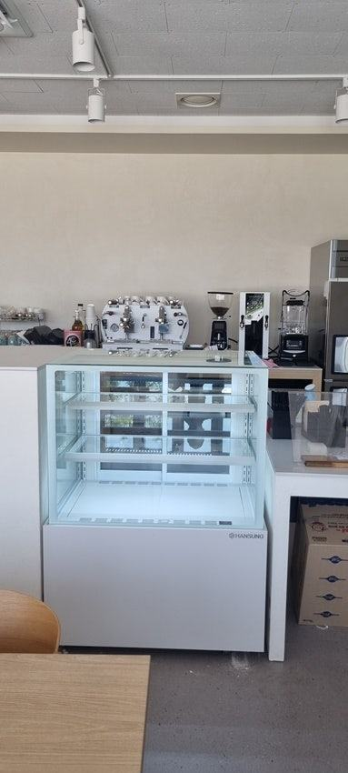
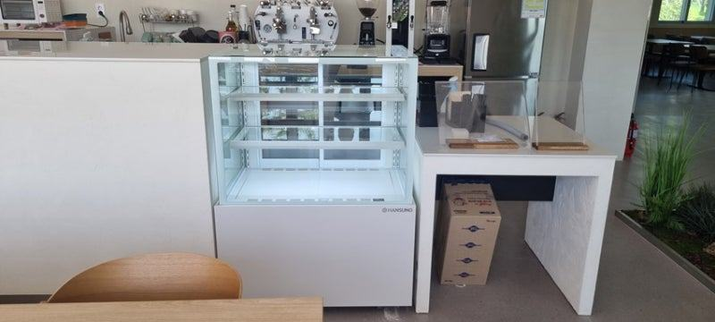
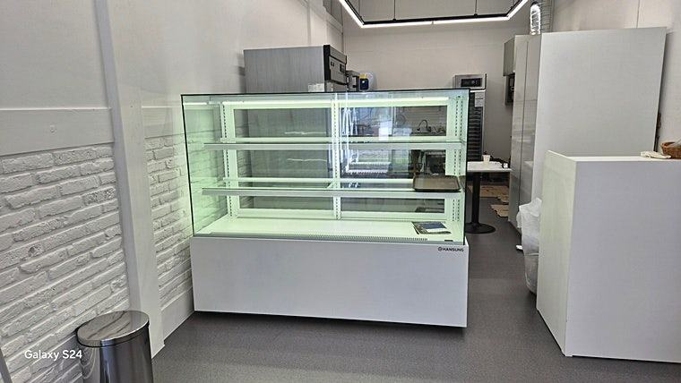
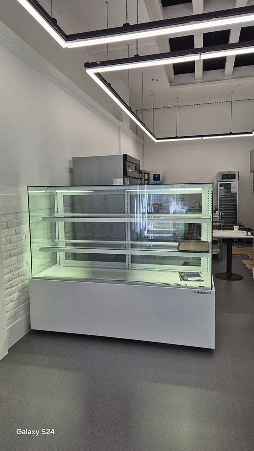
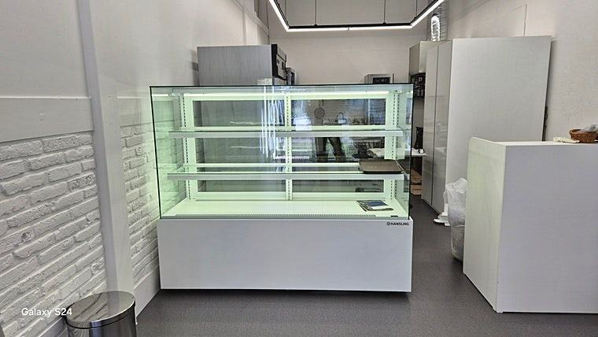
자주 묻는 질문
폐기를 줄이려면 쇼케이스를 더 큰 걸로 바꿔야 하나요?
크기보다 구역 구분과 냉기 전달 방식이 더 중요한 경우가 많습니다. 칸이 많아도 품목이 섞여 있으면 폐기는 그대로라, 먼저 지금 진열대에서 남는 칸이 어디인지 기록해 보시길 권합니다.
케이크가 진열 중에 자꾸 마르는데 원인이 뭘까요?
찬바람이 제품에 직접 닿는 위치이거나 문을 자주 여닫아 온도가 오르내리는 경우가 흔합니다. 송풍구 앞 칸 배치를 바꿔 보고, 그래도 계속되면 냉기를 순환시키는 방식의 쇼케이스를 검토해 보세요.
기존 매장 인테리어에 맞춰 칸 구성을 바꿔 제작할 수 있나요?
가능합니다. 매장 크기와 판매 품목에 맞춰 단 높이와 구역, 문 방향을 정해 제작하며, 쇼케이스 전문 디자이너가 설계 단계부터 함께 봅니다.
매장 조건에 맞춰 만드는 한성쇼케이스
원하시는 제품 사진과 설치할 공간 사진만 보내 주셔도 매장에 맞는 구성을 추천해 드립니다.
- 전국 240여 개 A/S 전담 센터 운영
- 본사 대량 자재 매입으로 품질 대비 합리적인 가격
- 유럽제·삼성 냉각 콤프레셔 적용
- 국내 최초 쇼케이스 전문 디자이너 상주
매장 폭과 원하는 진열 구성을 알려 주세요. 실측과 견적을 안내해 드립니다.
031-986-2458